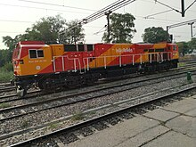
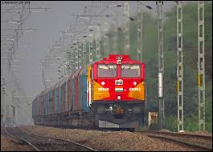
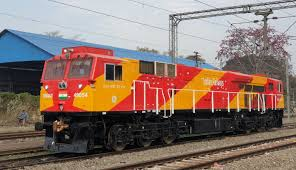
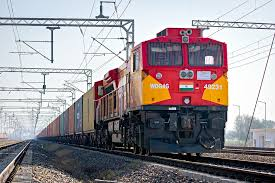
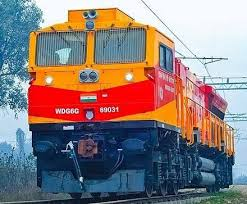
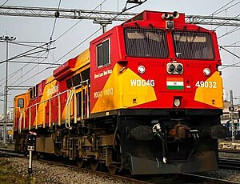

WDG 4G LOCOMOTIVES
WDG 4

The Indian locomotive class WDG-4G (GE ES43ACmi)[1] is a class of dual-cabin freight-hauling diesel–electric locomotive used by the Indian Railways (IR). The locomotive is designed by GE Transportation and is based on its Evolution Series, which are used in North America. The class is meant for freight hauling and replaces the older American Locomotive Company (ALCO)-designed locomotives, which have been the mainstay diesels of Indian Railways since 1962. Equipped with a 12-cylinder fully turbocharged GEVO engine, it is claimed to be 50% more environmentally friendly than its predecessors and is the first in the country to be compliant with level one of the emission norms set by the International Union of Railways (UIC-1). The locomotive has two cabs for easy reversal, both of which are air conditioned.
The locomotive is part of a 13-year contract between Indian Railways and GE Transportation under which 700 such locomotives will be produced indigenously. Diesel Locomotive Factory, Marhowrah was set up by GE for the production and supply of these locomotives which is also seen as a boost to the Make in India initiative. The maintenance of the locomotive will be GE's responsibility which will also have to ensure that 95% of the fleet is ready at all times. For this, real time remote tracking and fault diagnostics has been implemented in the locomotive.
Development

The development of the locomotive can be traced back to a global tender floated by the Ministry of Railways for the establishment of two different locomotive factories in Bihar. The tender also required that over 1,800 freight locomotives be supplied to Indian Railways. By September 2013, bids were received from six global firms: Siemens, Alstom, Bombardier, General Electric, CSR Corp and CNR Corp.[3] However, Indian Railways rejected the bid of both Chinese firms (CSR and CNR) for the two giant manufacturing projects in Bihar.[4]
WDG-4G locomotive at Meerut City Junction
In January 2014, Cabinet approval was received for setting up the Diesel Locomotive Factory (DLF) in Marhowra at an approximate cost of ₹2,052.58 crore (US$250 million) respectively.[5]
On 9 November 2015, the Ministry of Railways awarded the contracts for Madhepura and Marhowra projects to Alstom and General Electric Transportation respectively in a collective amount of US$6 billion. This multi-crore rupees deal was seen as the country's first foreign direct investment (FDI) in the railway sector.[6] The design for the locomotive was finalised by the Indian branch of GE Global Research in Bangalore. Under the contract, GE is stated to supply 700 of 4,500 HP locomotives and 300 of 6,000 HP locomotives. Both the locomotives are based on GE's Evolution-series locomotives, which are claimed to be one of the most fuel efficient and least polluting diesel locomotives in the world.
Production

The first 50 locomotives of the class were built at GE Transportation's manufacturing plant in Erie, Pennsylvania and were shipped to India while the remaining 950 (including 300 WDG-6G class) are being locally manufactured with 70% local parts under the Make in India initiative.[8][9][10] The locomotives will be built and assembled at the Diesel Locomotive Factory, Marhowrah in Bihar which is a joint venture between Indian Railways and General Electric with the former owning a 26% stake and the latter owning the remaining 74%.[11]
The first locomotive rolled out of GE's Erie plant on 3 August 2017 with an orange and yellow livery that required 190 litres (50 US gal; 42 imp gal) of paint.[12] The first shipment arrived in India on 11 October 2017 and the import order was completed on 23 November 2018 with the 50th locomotive's arrival at Mundra Port, Gujarat.[8][13]
An average of 100 locomotives will be produced per year for 10 years starting from 2019.[14] GE would be responsible for the fleet's maintenance during the first thirteen years of the contract, after which Indian Railways would be handed over the responsibility.
Traction

The prime-mover is a GE Evolution Series 12 cylinder turbocharged internal combustion diesel engine which produces 4,500 horsepower and transmits 4,261 HP to the wheels through six traction motors, one on each axle (Co'Co' configuration). Each axle's traction motor can be individually controlled to maintain maximum torque and tractive effort, up to 554 kN, even during conditions that induce wheel-slip.[10][16][17] The tier-1 GEVO (evolution series) engine is claimed to have 50% lower emission than previous locomotives in IR and is the first in its fleet to comply with UIC-1 emission standards.[18][19] The motors are driven by IGBT (Insulated Gate Bipolar Transistor) technology which allows for higher power gain and efficiency than the previous generation Gate turn-off thyristors.[16] The locomotive has a reduced fuel consumption than its predecessors due to an electronic fuel-injection system installed on it.[20][21]
The locomotive has a top speed of 100 kilometres per hour (62 mph) and weighs 127.89 tonnes (125.87 long tons; 140.97 short tons). The fuel tank has a capacity of 6,300 litres (1,700 US gal) out of which 6,000 litres (1,600 US gal) is usable during normal operations. The locomotive is capable of multiple unit operations which allows more load to be transported by attaching two or more locomotives controlled by the same crew.
Safety

A crash hardened event recorder/data logger has been provided on every such locomotive along with a vigilance control unit. The brakes are microprocessor controlled railway air brakes along with dynamic brakes which can produce a combined maximum braking effort of 270 kN.[17] A self load feature allows the locomotive to gauge its performance while the cell modem would enable real time remote monitoring of the locomotive's performance and health.[16]
The cab is strengthened to comply with cab frontal collision as per RDSO specifications (EN12663) and equipped with fire-fighting equipment for crew safety. Additionally, the cabs, control units and their compartments are made using fire retardant material.
Crew amenities

Unlike older locomotives of Indian Railways, the WDG-4G has various facilities for crew comfort and utilities, including temperature control and heated windshields. Each locomotive comes fitted with a water closet for crew comfort, a feature which has been largely missing on most Indian locomotives. A hot plate is also provided for heating meals while on the run. Additional features such as soundproofing of the driver cabs and charging sockets for cellphones have reportedly made the locomotive popular among loco-pilots.
Operation
The locomotive class operates out of two sheds (maintenance depots), each controlled by Wabtec (which acquired GE Transportation in 2018). One of the shed is in Ghandhidham, Gujarat under Western Railway zone while the other one is in Roza, Uttar Pradesh under Northern Railway Zone where a total of 500 locomotives have entered service.[25][26] Remaining 500 GE locos will Hold at 250 locos at Gooty Diesel Shed and 250 Locos at Siliguri Diesel Shed.GE has said that, during operations, real time tracking will be undertaken for the locomotives to 'increase productivity and minimize time duration'.[27] As part of its contract on the maintenance and upkeep of the locomotives, Wabtec has to keep 95% of the fleet in operational condition, failure of which would result in a penalty from Indian Railways.[28]
The locomotives are to take over the freight hauling duties from older locomotives in Indian Railways' fleet, mainly ALCO and EMD locos. The former was the last major import shipment for IR which was in 1962 when IR acquired the WDM-2 series of locomotives.[29][30] The axle load of the locomotive has been kept at a minimal 22 tonnes per axle to allow operations all over the Indian Railway network which has a lower axle load limit.